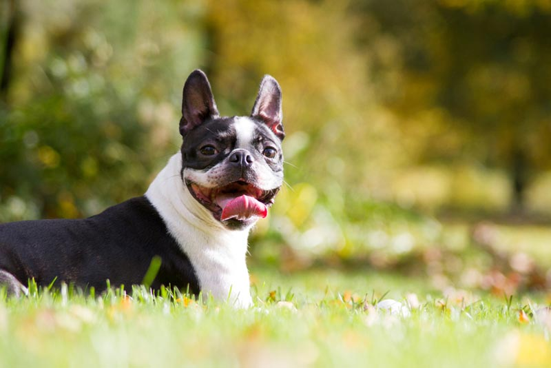

Pet Channel
| บอสตัน เทอร์เรียร์ (Boston Terrier) |
|  |
ลักษณะทั่วไป เพศผู้มีความสูงประมาณ 17 นิ้ว และเพศเมียสูงประมาณ 16 นิ้ว บอสตันเป็นสุนัขที่กระทัดรัด มีสัดส่วนที่ดี อกกว้าง ศรีษะทรงเหลี่ยมและแบนเรียบด้านบน ปากเหลี่ยม สั้นและกว้าง ดวงตาเข้ม กลม ขนาดใหญ่ หูเล็กตั้งเหมือนหูค้างคาว แม้ว่าบางตัวอาจจะมีหูพับและก็จะถูกดัดให้ตั้งขึ้น หางสั้นตรงหรือที่เรียกว่าเป็นจุกไขก๊อก (corkscrew) ขนของบอสตัน จะสั้น เรียบ มีทั้งแบบลายมีแต้มสีขาว ดำพร้อมแต้มสีขาว หรือสีแมวน้ำ (ดำผสมแดง)พร้อมแต้มสีขาว บอสตัน เทอร์เรียร์ ขี้เล่น และมีธรรมชาติที่ดี เขาเป็นตัวเลือกที่ยอดเยี่ยมสำหรับคนที่มองหาเพื่อนคู่หูที่ร่าเริง และสนุกสนาน บอสตันเข้าได้ดีกับสัตว์เลี้ยงตัวอื่น แม้กระทั่งแมว โดยเฉพาะอย่างยิ่งหากเลี้ยงมาด้วยกัน เนื่องจากเขามีรูปร่างกำยำ บอสตันอาจจะอดทนต่อเด็กได้มากกว่าสุนัขขนาดเล็ก หากเด็กปฏิบัติกับเขาอย่างดี เขาจะชอบไปไหนมาไหนกับเด็ก บอสตันสนุกกับการฝังกระดูกไว้ใต้หมอนหรือในเตียงดอกไม้ แต่เกมที่เขาชื่นชอบคือการไล่เก็บของ |